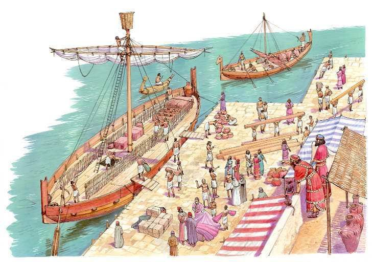
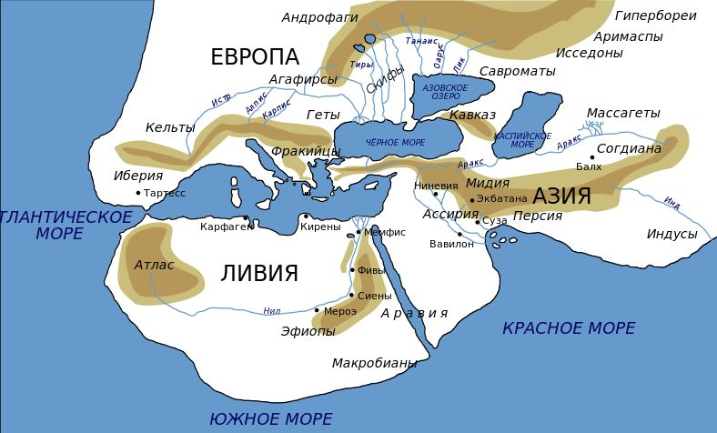

Я вас предупреждал, что рассматривать вопросы навигации мы будем детально и не спеша. Предупрежден – значит вооружен (терпением). Так что терпите.
В первых английских пособиях по навигации непременно содержался список документов, которые надо брать на борт перед выходом в море. И одно из первых мест в этом списке занимала лоция. Перед тем, как привести характеристики этого документа, которые он обрел в XVI веке, скажем несколько слов о его истории.
В одном из наших первых постов в журнале мы рассказали о зарождении в античные времена нового литературного жанра. Это были рассказы о морских приключениях, которые стали именоваться периплы, по названию одного из первых произведений такого рода – «Перипл Гимилькона», который рассказывает о морском путешествии карфагенского мореплавателя Гимилькона.

Плавание финикийских кораблей к своим прибрежным колониям.
В современных языках слово перипл (англ. periplus, франц. périple, итал. и исп. periplo; от греческого περίπλους - переход по морю, «круговое плавание» вдоль берегов моря или вокруг островов) относится как раз к описаниям морских путешествий у античных авторов. Текст периплов как правило отражал суть названия, т.е. давал описание плаваний по некоторым замкнутым маршрутам – вокруг острова, например, или даже целого континента, а также вдоль побережья одной какой- нибудь страны или берегов какого-либо моря. Так, у Фукидида в «Истории Пелопоннесской войны» мы читаем
Σικελίας γὰρ περίπλους μέν ἐστιν ὁλκάδι οὐ πολλῷ τινὶ ἔλασσον ἢ ὀκτὼ ἡμερῶν, καὶ τοσαύτη οὖσα ἐν εἰκοσισταδίῳ μάλιστα μέτρῳ τῆς θαλάσσης διείργεται τὸ μὴ ἤπειρος εἶναι:
Между тем обогнуть Сицилию на грузовом судне можно немного меньше, чем в восемь дней. Несмотря на столь значительное протяжение, Сицилия разъединена от материка только двадцатью стадиями морского пространства.
Перевод Ф. Г. Мищенко
Путешествие вокруг Сицилии на купеческом корабле занимает около 8 дней, и при такой величине остров отделен от материка проливом шириной всего лишь около 20 стадий
Перевод Г. А. Стратановского.
Thucydides (VI, 1)
А у Геродота в «Истории» речь идет о плавании вокруг Ливии (Африки):

Карта мира по Геродоту. Вариант.
θερίσαντες δ᾽ ἂν τὸν σῖτον ἔπλεον, ὥστε δύο ἐτέων διεξελθόντων τρίτῳ ἔτεϊ κάμψαντες Ἡρακλέας στήλας ἀπίκοντο ἐς Αἴγυπτον. καὶ ἔλεγον ἐμοὶ μὲν οὐ πιστά, ἄλλῳ δὲ δή τεῳ, ὡς περιπλώοντες τὴν Λιβύην τὸν ἥλιον ἔσχον ἐς τὰ δεξιά.
Herodotus (IV, 42)
Поскольку плавание на парусно-гребных кораблях вокруг Африки на стыке VI и V веков до н.э. для нас интересно само по себе, вне зависимости от используемой терминологии, приведем более широкий перевод этого отрывка на русский язык, чтобы был понятен контекст:
42. Поэтому мне кажется странным различать по очертанию и величине три части света – Ливию, Азию и Европу (хотя по величине между ними различие действительно немалое). Так, в длину Европа простирается вдоль двух других частей света, а по ширине, думается, она и не сравнима с Азией и Ливией. Ливия же, по видимому, окружена морем, кроме того места, где она примыкает к Азии; это, насколько мне известно, первым доказал Неко, царь Египта. После прекращения строительства канала из Нила в Аравийский залив царь послал финикиян на кораблях. Обратный путь он приказал им держать через Геракловы Столпы, пока не достигнут Северного моря и таким образом не возвратятся в Египет. Финикияне вышли из Красного моря и затем поплыли по Южному. Осенью они приставали к берегу, и в какое бы место в Ливии ни попадали, всюду обрабатывали землю; затем дожидались жатвы, а после сбора урожая плыли дальше. Через два года на третий финикияне обогнули Геракловы Столпы и прибыли в Египет. По их рассказам (я-то этому не верю, пусть верит, кто хочет), во время плавания вокруг Ливии солнце оказывалось у них на правой стороне.
Перевод Г. А. Стратановского
Примечание. Плавание вокруг Африки финикияне совершили по приказанию египетского фараона Неко, известного по библии (Цар.23-34) как царь Нехао (609 – 593 гг.), сын Псамметиха I. При вступлении Нехао в 609 г. до н.э. на египетский престол Ассирия находилась в таком упадке, что ничто не препятствовало восстановить Египетскую империю в Азии. Первоначально внешняя политика Нехао отмечена успехами: у Мегиддо он одержал победу над иудейским царем. Затем, покорив Сирию и Палестину, дошел до Евфрата, но в 605 г. до н.э. в битве при Каркемише Нехао потерпел поражение от вавилонского царя Навуходоносора, и Египет вновь потерял свои азиатские владения.
Постепенно периплы стали пополняться сведениям, напоминающими выписки из путевых журналов путешественников Нового времени. В деталях описывались особенности морского пути, подстерегающие мореплавателей опасности, места якорных стоянок и удобные рейды, наличие поблизости источников пресной воды и т.п. Часто периплы включали описания не только береговых объектов, но и глубинных районов отдельных стран, обычаев населяющих их народов, становясь, таким образом, не только пособием для моряков, но собранием более широкой географической информации. Но почти всегда любой перипл открывался сведениями о береговых населенных пунктах и расстояниях между ними. И рассказывалось в них лишь о путешествиях по морю. [ Для тех, кто пожелает ознакомиться со структурой и стилем перикла рекомендую перевод на русский язык перипла Флавия Арриана («Перипл Понта Евксинского» http://simposium.ru/ru/node/12352 )]
Сухопутные путешествия рассматривались в сочинениях другого рода, которые у греков назвались περιήγησις (периегесис) или иногда περίοδος (периодос).
Не все периплы дошли до нас, от некоторых сохранились только фрагменты, от других – лишь упоминания в других произведениях античных авторов. Первые дошедшие до нас периплы на греческом языке относятся к IV в. до н.э, последние – к V в. н.э.
Из-за того, что периплы отдавали предпочтение практическим знаниям, пренебрегая зачастую знаниями теоретическими, древнегреческий историк и географ Страбон презрительно относился к их авторам. В то же время такие сторонники практики, как Полибий или Артемидор Эфесский отдавали предпочтение писателям, которые сообщают о том, что лни видели своими глазами, а не исходят лишь из умозрительных построений.
В ходе исторической эволюции из периплов стали исчезать многочисленные страшилки и фантастические описания неведомых мест и из произведений художественной литературы они превратились во вполне себе реалистичные пособия или наставления для моряков, совершающих плавание в неизвестных им водах.
Так родились итальянские портолани. Но о них мы расскажем в следующий раз.